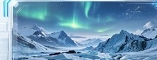

⏱12 min阅读时长
📅2024.03.18发布日期
👁2.8k阅读量
♥2.8k点赞
01.行程概览
当极光划破北极圈的夜空，吕瑟峡湾的冰川在星光下泛着冷调的蓝。七日徒步，穿越最震撼的峡湾线，从卑尔根出发，深入极地边缘，体验冰与光的诗篇。
本次路线全长约 68 公里，海拔爬升 1200m，沿途经过冰川湖、雪山营地、古老渔村。我们选择三月出发，正值极光季高峰，夜晚气温 -8℃ 至 -2℃，日间晴好，适合徒步与摄影。
02.徒步路线 & 每日记录
- Day 1.卑尔根 → 弗拉姆，冰川列车初体验
- Day 3.攀登布道石，悬崖日落
- Day 5.冰川宿营 & 极光守夜
第三天是最难忘的一天。清晨五点出发，背着十五公斤的包，沿着之字形山路上行。下午四点登顶布道石时，云层正好裂开一道缝，阳光像舞台灯一样打在峡湾上，同行的人都安静了。

03.极光观测与拍摄建议
- 最佳观测时间：23:00–02:00，避开月光，KP 值 ≥ 4 时成功率更高。
- 摄影参数：ISO 1600–3200，f/2.8，快门 15–20 秒，三脚架必备。
- 推荐设备：广角镜头 14–24mm，防寒电池保温套。
图 · 第三天营地，KP5 级极光爆发实拍
04.装备清单与保暖指南
三层穿衣是铁律：排汗内衣 + 抓绒中间层 + 防风冲锋衣。手套备两副（一薄一厚），帽子遮住耳朵，暖宝宝贴满鞋垫。极寒下手机半小时就关机，充电宝贴身放，用保温套裹住相机电池。
05.摄影技巧 & 相机设置
手动对焦拧到无穷远再回拨一点，用实时取景放大星星确认合焦。前景找个小木屋或枯树做剪影，画面立刻有故事。别只顾拍——留十分钟给自己，躺下来看极光在头顶流动。
06.安全提示 & 当地注意
布道石一带无护栏，风大时贴着内侧走；冰川行走务必跟向导，不要独自上冰。挪威商店周日大多关门，补给提前买好。最后一晚，极光如期而至——所有的寒冷和疲惫都值得。